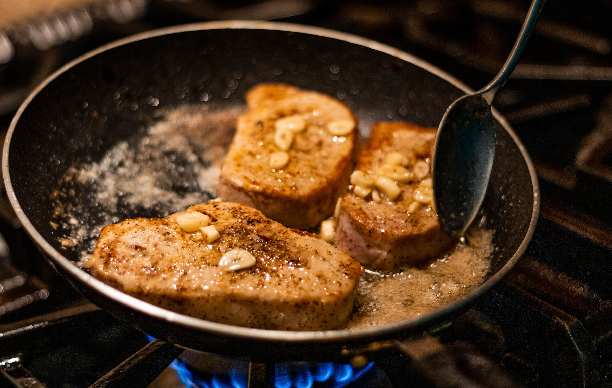

Pork Chops

The Versatile and Barbaric Delight: The Glory of Pork Chops!
Pork chops are like the business casual of meats. They're not quite as fancy as a prime rib, but they're not as casual as a hot dog. They're like the khaki pants of meats - versatile, reliable, and always a safe choice for dinner. Plus, they come with their own built-in handle, so you can feel like a barbarian while you eat them.
Ingredients
- 4 pork loin chops
- Kosher salt
- Freshly ground black pepper
- 1 tbsp. freshly minced rosemary
- 2 cloves garlic, minced
- ½ cup (1 stick) butter, melted
- 1 tbsp. extra-virgin olive oil
Steps
- Preheat oven to 375°. Season pork chops generously with salt and pepper.
- In a small bowl mix together butter, rosemary, and garlic. Set aside.
- In an oven safe skillet over medium-high heat, heat olive oil then add pork chops. Sear until golden, 4 minutes, flip and cook 4 minutes more. Brush pork chops generously with garlic butter.
- Place skillet in oven and cook until cooked through (145° for medium), 10-12 minutes. Serve with more garlic butter.